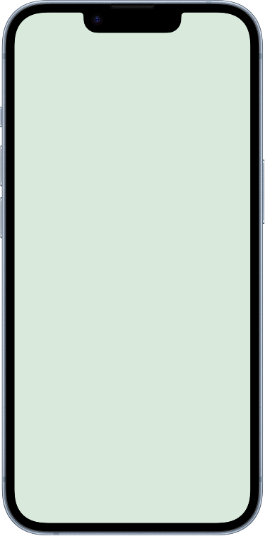

Fokus auf „Die Blockierten“
Drei Segmente identifiziert, aber nur eins gewählt: Menschen, die Verbindung wollen, sich aber aus Angst und Scham nicht trauen. Hier war die Blockade am stärksten belegt.
Verbindung, ohne dass du den ersten Schritt merkst.

DAS PROBLEM
71% der von mir Befragten warten passiv darauf, angesprochen zu werden. Wenn niemand aus dem Umfeld Zeit hat, ziehen sich 92% zurück, statt jemanden Neues anzusprechen. In den Interviews zeigte sich: das Problem ist nicht fehlender Wunsch nach Verbindung, sondern der bewusste erste Schritt selbst. Besonders betroffen: junge Erwachsene zwischen 18 und 35, bei denen Einsamkeit deutlich verbreiteter ist als bei Älteren.
71%
warten passiv darauf, angesprochen zu werden
92%
ziehen sich zurück, wenn niemand Zeit hat
51%
der 18–35-Jährigen erleben moderate Einsamkeit *
* Bertelsmann Stiftung, 2024 · restliche Zahlen: eigene Umfrage, n=52
PROZESS & SCHLÜSSELENTSCHEIDUNGEN
Nicht der komplette Weg, sondern die Momente, die die Richtung verändert haben.
„Ich hab mich einfach damit abgefunden, dass mir irgendwas fehlt, ich aber nicht weiß was.“
Hanna, Persona aus 4 Interviews + 52 Umfrage-AntwortenDrei Segmente identifiziert, aber nur eins gewählt: Menschen, die Verbindung wollen, sich aber aus Angst und Scham nicht trauen. Hier war die Blockade am stärksten belegt.
Von 8 Ideen war „wöchentliche Aufgaben mit Feed als Nebenprodukt“ die einzige, die den Einstieg komplett vom sozialen Druck trennt. Man lädt die App wegen der Aufgaben, nicht wegen „Freunde finden“.
Kontakt entsteht nur, wenn beide sich in echt begegnen und beide aktiv werden. Nimmt das Ablehnungsrisiko komplett raus, nicht verhandelbar von Anfang an.
Die Wiederbegegnung im Feed wurde ohne Erklärung angezeigt, eine Testperson beschrieb das als unheimlich statt vertraut. Das hat den gesamten Begegnungs-Flow verändert: von stillem Hinweis zu einem Moment, den beide gleichzeitig sehen. Der Code-Austausch wurde außerdem von Eintippen zu Handy-Tap umgebaut.
DIE LÖSUNG
5 Key Screens, jeder mit der Designentscheidung dahinter, nicht nur der Screenshot.
Statt einer klassischen Foto-Pflicht erklärt der Screen sofort, wozu das Foto gebraucht wird: damit man sich in der echten Stadt wiedererkennt, nicht zur Selbstdarstellung. Direkt aus dem Testing-Konflikt entstanden: ein zu frühes Pflichtfoto wirkte aufdringlich, aber ohne Foto war reale Wiedererkennung nicht möglich.
Ein Spot ist eine konkrete, ortsgebundene Wochenaufgabe. Nutzer:innen starten sie, machen sie in der Stadt, laden ein Foto hoch und schließen ab, jeder Schritt funktioniert komplett für sich, ganz ohne dass soziale Interaktion nötig ist.
Begegnen sich zwei Personen am selben Spot zur selben Zeit, zeigt die App beiden gleichzeitig: „Ihr seid euch gerade begegnet. Niemand muss den Anfang machen.“ Genau die Stelle, die im Test als unheimlich empfunden wurde, jetzt bewusst erklärt statt versteckt.
Statt einen Code einzutippen, halten beide ihre Handys aneinander. Das Eintippen fühlte sich im Test zu direkt an, für eine Zielgruppe, die genau vor dieser Direktheit zurückschreckt.
Der Chat startet nicht leer, sondern mit einem Hinweis auf den gemeinsamen Ort und Moment. Das nimmt den Druck, selbst ein Gesprächsthema finden zu müssen.
Klickbarer Kern-Flow: Onboarding → Spot → Begegnung → Chat
TESTING & ITERATION
2 Testpersonen, Think-Aloud-Methode, klickbarer Mid-Fi-Prototyp.
Testpersonen empfand die unerklärte Wiederbegegnung im Feed als „creepy“, obwohl sie das Grundkonzept in eigenen Worten treffend beschreiben konnte. Genau dieser eine Fund hat den zentralen Moment der App verändert.
„Warum sehe ich ständig die gleiche Person? Würde blockieren wollen.“ Austausch per Code eintippen.
„Ihr seid euch gerade begegnet. Niemand muss den Anfang machen.“ Austausch per Handy-Tap.
KI IM DESIGNPROZESS
Konkret, wo Claude wirklich mitgearbeitet hat, und wo nicht.
Affinity Map, Persona und HMW-Formulierung mehrfach gegen die eigenen Interview- und Umfragedaten gegengeprüft, ca. 2 Stunden Vorarbeit gespart. Interpretation und finale Entscheidung blieben bei mir.
Jedes erkannte Muster in Bumble BFF in eine konkrete Designfrage für sameSpot übersetzt, als strukturiertes Gerüst, das ich anschließend inhaltlich geprüft und angepasst habe.
Sparring beim Einordnen von 10 Testing-Befunden in kritisch, wichtig und nice-to-have. Die tatsächliche Priorisierung und alle finalen Texte im Prototyp kamen aus meiner eigenen Bewertung.
Alle finalen Interpretationen, Entscheidungen und die tatsächliche Copy im Prototyp kamen aus eigener Bewertung der Daten, nicht aus einer KI-Ausgabe.
LEARNINGS & AUSBLICK
Konzept-Klarheit im Pitch heißt nicht Interface-Klarheit in der Nutzung. Eine Testperson konnte sameSpot treffend beschreiben, hat die Mechanik im UI aber trotzdem nicht wiedererkannt.
Rückblickend hätte ich die Begegnungs-Mechanik schon vor dem Mid-Fi mit einem einfachen Klick-Dummy testen sollen. Das hätte eine Iterationsrunde gespart.
Mit mehr Zeit würde ich mit mehr als zwei Testpersonen testen und den Cold-Start-Fall (wenige Nutzer:innen im Feed) gezielt durchspielen.
Mit mehr Zeit als Nächstes: Kontaktaufnahme und Handy-Tap in einem echten Zwei-Personen-Test prüfen, den Cold-Start-Fall lösen und weitere Städte nach Lüneburg erschließen.
Ich bin Lina, UX/UI Designerin aus Lüneburg, aktuell im Product Design Bootcamp bei der Digitale Leute School, vorher IHK-zertifizierte Mediengestalterin Digital & Print. Mich interessiert, wie Design echte, ehrliche Verbindung zwischen Menschen möglich macht, statt sie nur zu simulieren.